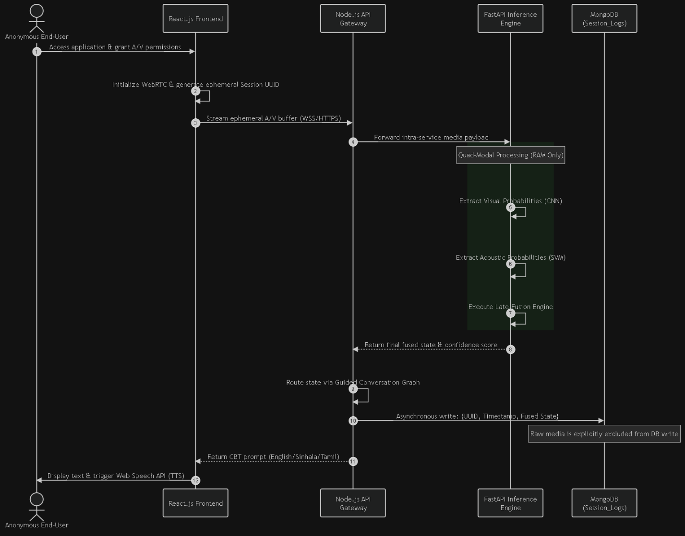

Figure 10: Multimodal Asynchronous Sequence Flow (Thesis Chapter 5)
1
WebRTC Media Acquisition
Browser captures webcam video frames & audio chunks under user consent.
2
WebSocket Streaming
Bi-directional full-duplex TCP stream delivers payloads with <50ms network latency.
3
Parallel Worker Inference
FastAPI dispatches Facial CNN & Speech DNN via non-blocking worker threads.
4
Late Fusion & Conflict Resolution
Calculates 50/50 weighted state and checks for polar emotion conflicts.
5
Constrained CBT Dialogue & TTS
Gemini LLM generates structured therapy reply; audio is synthesized via TTS.
Non-Blocking Concurrency: asyncio.to_thread isolates heavy tensor matrix multiplications, preserving a smooth 60 FPS client experience.